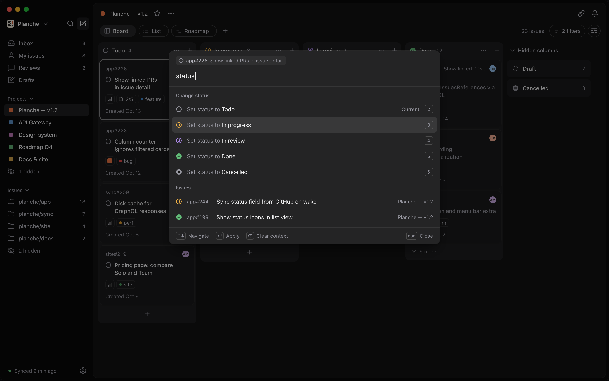
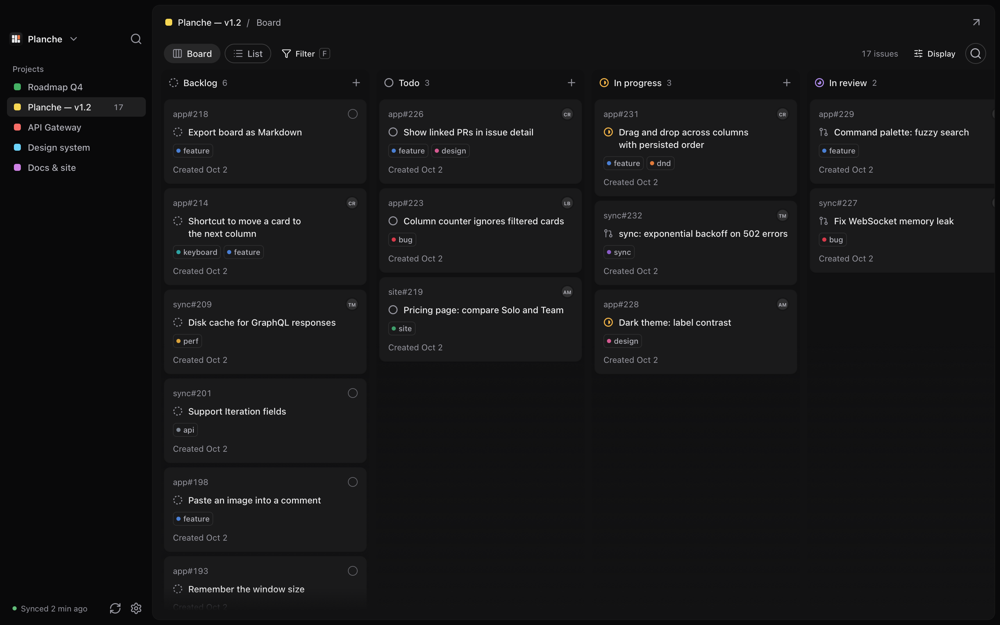
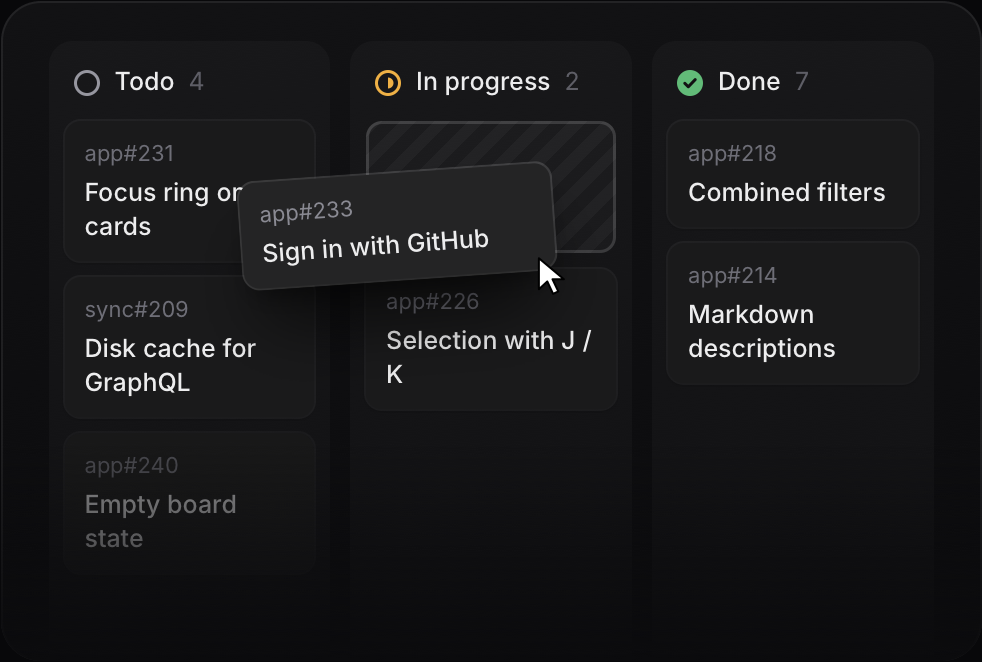
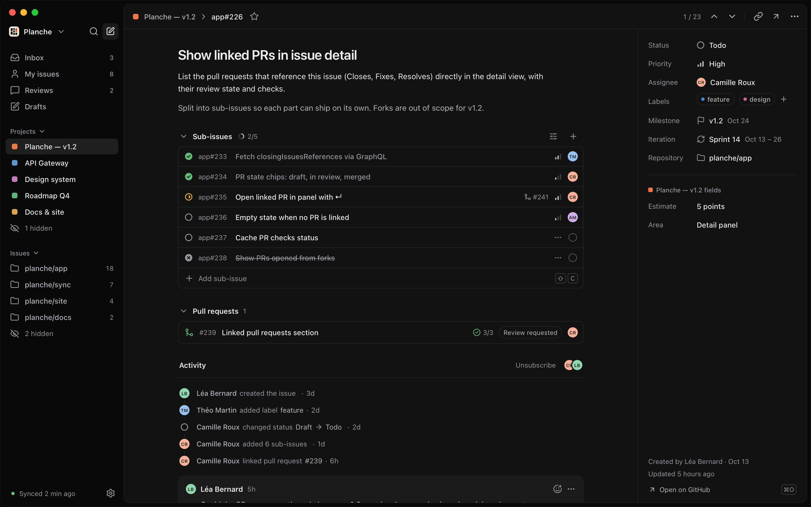

Command palette
Change status, assign, label or jump to any issue from ⌘K, wherever you are.

Planche is a native macOS client for GitHub Projects. Move cards from the keyboard, reach every action with ⌘K, and keep working when the network doesn't.
Public alpha · macOS 15+

Boards open from a local cache, then sync quietly in the background.
J and K to move, S for status, 1 to 6 to set it. Every action has a shortcut.
A real macOS window built with Rust and Tauri, not a browser tab.
Built around how GitHub Projects already work: statuses, sub-issues, linked pull requests and the views you set up.
Change status, assign, label or jump to any issue from ⌘K, wherever you are.

Cards lift, columns make room, and the move lands on GitHub when you let go.

Planche is built to be driven from the keyboard. The mouse is optional.
Markdown descriptions, sub-issues with progress, linked pull requests and properties. No browser tab required.

Planche is built in public on GitHub. Here are some recent improvements.
All releasesIssue content and permissions are shared across projects, so an issue reads the same wherever you open it.
Sign in once; your session persists locally between launches.
Issue descriptions render as Markdown, safely sanitized.
Open any card as a full page, from the board or the list.
Filter by assignee, label and repository at the same time.
Try the public alpha. Sign in with GitHub and your projects are already there.